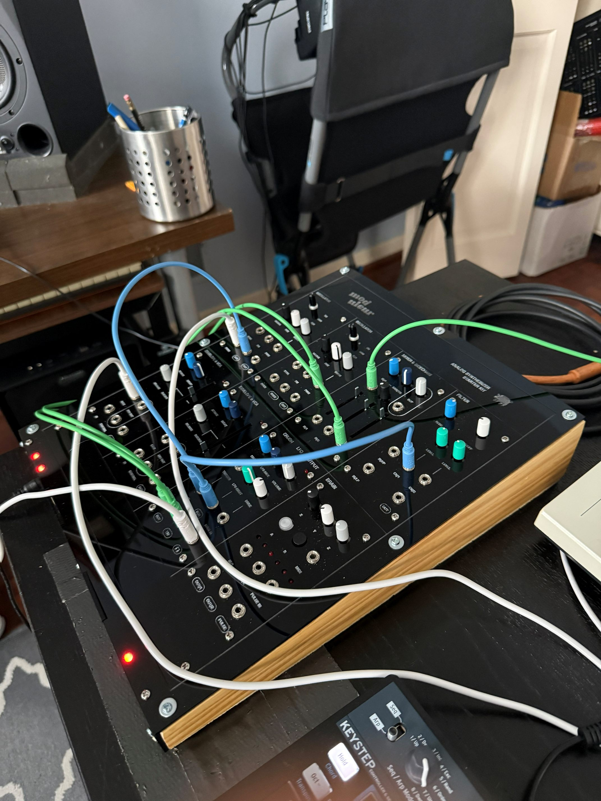
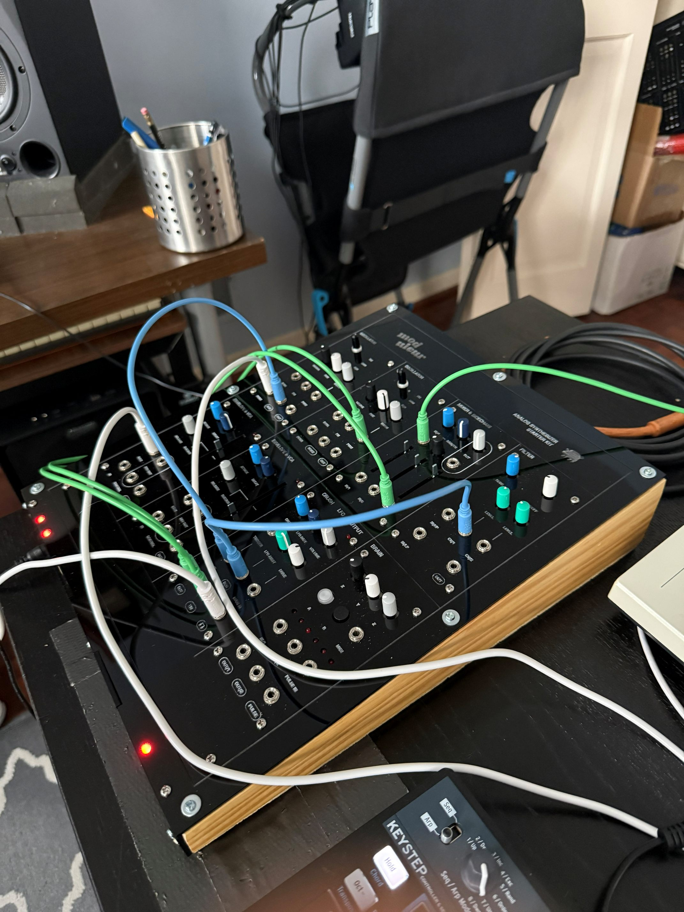

Notes
I finished the Moduleur's enclosure this weekend! It was a little bit painstaking getting the cast acrylic to nicely connect to the wood (the first attempt cracked in the upper left corner) but I learned a lot about using a laser cutter. And I relearned how to use my table saw! I was playing around with driving the synth via Ableton and recorded this little demo, still unfinished.